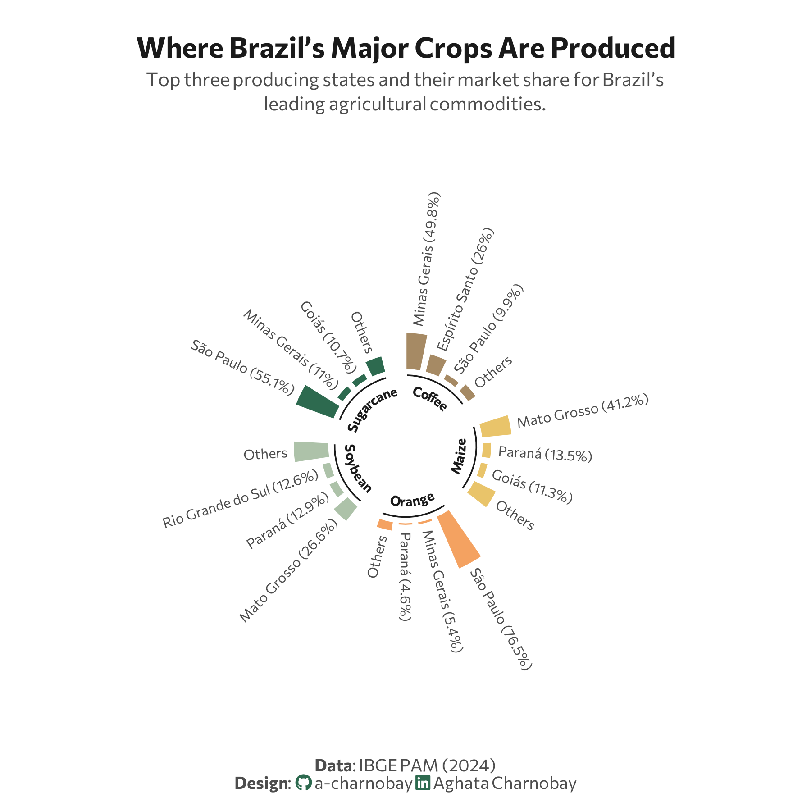

library(reticulate)
use_virtualenv("r-reticulate", required = TRUE)
#py_config()08.Circular
Distributions
Circular

1 Setup
1.1 Create R and Python connection
1.2 Load R packages
library(tidytext)
library(ggtext)
library(showtext)
library(stringr)
library(tidyverse)
library(here)
library(readxl)
library(geomtextpath)1.3 Load data
import agrobr
import asyncio
import pandas as pd
import numpy as np
from agrobr import ibge
orange = asyncio.run(ibge.pam('laranja', ano=2024, nivel='uf'))print(orange)soybean = asyncio.run(ibge.pam('soja', ano=2024, nivel='uf'))print(soybean)coffee = asyncio.run(ibge.pam('cafe', ano=2024, nivel='uf'))print(coffee)sugarcane = asyncio.run(ibge.pam('cana', ano=2024, nivel='uf'))print(sugarcane)maize = asyncio.run(ibge.pam('milho', ano=2024, nivel='uf'))print(maize)1.4 Creating the dataset
# soybean
soybean <- py$soybean
soybean_final <- soybean %>%
select(region = localidade, value = producao) %>%
slice_max(value, n = 3) %>%
add_row(region = "Brazil", value = sum(soybean$producao, na.rm = TRUE)) %>%
mutate(crop = "Soybean")
# orange
orange <- py$orange
orange_final <- orange %>%
select(region = localidade, value = producao) %>%
slice_max(value, n = 3) %>%
add_row(region = "Brazil", value = sum(orange$producao, na.rm = TRUE)) %>%
mutate(crop = "Orange")
# coffee
coffee <- py$coffee
coffee_final <- coffee %>%
select(region = localidade, value = producao) %>%
slice_max(value, n = 3) %>%
add_row(region = "Brazil", value = sum(coffee$producao, na.rm = TRUE)) %>%
mutate(crop = "Coffee")
# sugarcane
sugarcane <- py$sugarcane
sugarcane_final <- sugarcane %>%
select(region = localidade, value = producao) %>%
slice_max(value, n = 3) %>%
add_row(region = "Brazil", value = sum(sugarcane$producao, na.rm = TRUE)) %>%
mutate(crop = "Sugarcane")
# maize
maize <- py$maize
maize_final <- maize %>%
select(region = localidade, value = producao) %>%
slice_max(value, n = 3) %>%
add_row(region = "Brazil", value = sum(maize$producao, na.rm = TRUE)) %>%
mutate(crop = "Maize")
# Join the datasets
raw_data_2024 <- bind_rows(
soybean_final,
maize_final,
sugarcane_final,
coffee_final,
orange_final
)1.5 Set theme
# Font setup
font_add_google("Commissioner")
showtext_auto()
showtext_opts(dpi = 300)
font_main <- "Commissioner"
# Font Awesome for caption
font_add(family = "fa-brands", regular = here("fonts", "Font Awesome 7 Brands-Regular-400.otf"))
# Colors
title_col <- "grey10"
text_col <- "grey30"
bg_col <- "#F2F4F8"
col_soy <- "#ADC2A9"
col_coffee <- "#A68A64"
col_sugar <- "#2D6A4F"
col_orange <- "#F4A261"
col_maize <- "#E9C46A" 2 Prepare data for plotting
df_radial <- raw_data_2024 |>
group_by(crop) |>
mutate(
total_val = value[region == "Brazil"],
pct = (value / total_val) * 100
) |>
filter(region != "Brazil") |>
slice_max(order_by = pct, n = 3, with_ties = FALSE) |>
# Add Others
group_modify(~ add_row(.x, region = "Others", pct = 100 - sum(.x$pct))) |>
arrange(crop, region == "Others", desc(pct)) |>
group_modify(~ add_row(.x, region = "GAP", pct = NA)) |>
ungroup() |>
mutate(spoke_id = row_number()) |>
mutate(
fill_color = case_when(
region == "GAP" ~ NA_character_,
crop == "Soybean" ~ col_soy,
crop == "Coffee" ~ col_coffee,
crop == "Sugarcane" ~ col_sugar,
crop == "Orange" ~ col_orange,
crop == "Maize" ~ col_maize,
TRUE ~ "grey90"
),
label_text = ifelse(region == "Others", "Others",
paste0(region, " (", round(pct, 1), "%)"))
)
df_labels <- df_radial |>
filter(region != "GAP") |>
mutate(
angle = 90 - 360 * (spoke_id - 0.5) / max(df_radial$spoke_id),
hjust = ifelse(angle < -90, 1, 0),
angle = ifelse(angle < -90, angle + 180, angle)
)3. Plot
p <- ggplot(df_radial, aes(x = spoke_id, y = pct, fill = fill_color)) +
geom_col(width = 0.8, color = "white") +
# Structural setup
ylim(-100, 170) +
coord_polar(start = 0) +
scale_fill_identity() +
# Data labels
geom_text(data = df_labels,
aes(label = label_text, y = pct + 8, angle = angle, hjust = hjust),
size = 2.6, family = font_main, color = text_col) +
# Inner labels
geom_segment(data = df_radial %>% filter(region != "GAP") %>% group_by(crop) %>%
summarize(start = min(spoke_id) - 0.3, end = max(spoke_id) + 0.3),
aes(x = start, xend = end, y = -7, yend = -7),
color = title_col, size = 0.4, inherit.aes = FALSE) +
geom_textpath(data = df_radial %>% filter(region != "GAP") %>% group_by(crop) %>%
summarize(start = min(spoke_id), end = max(spoke_id)),
aes(x = (start + end)/2, y = -15, label = crop),
size = 2.5, fontface = "bold", color = title_col,
family = font_main, inherit.aes = FALSE, vjust = 0, hjust = 0.5) +
# Labs
labs(
title = "Where Brazil’s Major Crops Are Produced",
subtitle = "Top three producing states and their market share for Brazil’s<br>leading agricultural commodities.",
caption = paste0(
"**Data**: IBGE PAM (2024)",
"<br>**Design**: <span style='font-family:fa-brands; color:#2D6A4F;'></span> a-charnobay ",
"<span style='font-family:fa-brands; color:#2D6A4F;'></span> Aghata Charnobay"
)
) +
#Styling
theme_minimal(base_family = font_main) +
theme(
plot.title.position = "plot",
plot.title = element_text(face = "bold", size = 15, color = title_col, hjust = 0.5,margin = margin(b = 5) ),
plot.subtitle = element_markdown(size = 10, color = text_col, hjust = 0.5, lineheight = 1.3, margin = margin(b = 40)),
plot.caption.position = "plot",
plot.caption = element_markdown(size = 9, color = text_col, hjust = 0.5, margin = margin(t = 30)),
panel.grid = element_blank(),
axis.text = element_blank(),
axis.title = element_blank(),
plot.margin = margin(20, 30, 10, 30), # Centers the circle
plot.background = element_rect(fill = "white", color = NA)
)